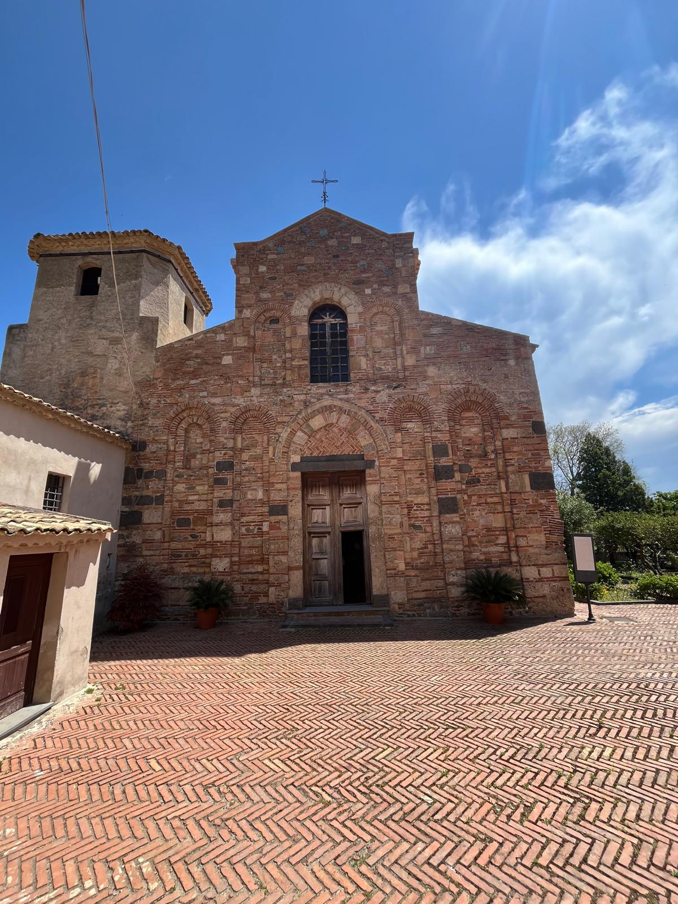
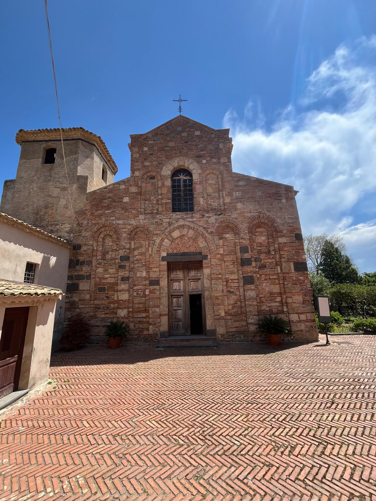

DAL 28 MAGGIO
Aula magna Istituto Archimede Messina
IL PROGETTO
“Un Ponte tra Culture” è progetto finanziato dalla Regione Sicilia con lo scopo di valorizzare l’eredità arabo-normanna in Sicilia e condotto dai Proff. Calderone e Vanfiori ... . Principalmente incentrato sull’architettura siciliana tra XI e XII secolo, il progetto si pone l’obiettivo di stimolare il pensiero critico dei giovani sulla persistenza della cultura araba e normanna nella produzione artistica contemporanea. A partire dal 28 maggio nell’Aula Magna del Liceo Archimede (Viale Regina Margherita, 3) di Messina saranno visibili i lavori degli studenti delle classi II B, C, F e M.
L'ANTICO E IL MODERNO
Per sua natura l’arte contemporanea ha un legame col passato. Esso si manifesta talvolta come citazione di opere d’arte o architetture note ... , talaltra come eco lontano. Di fatto nella società e nella cultura siciliana attuale troviamo moltissimi riferimenti alla cultura arabo-normanna che si traducono anche nelle espressioni artistiche. Non ultima la street art. La rivisitazione di elementi architettonici e decorazioni sotto forma di pattern è emersa come chiave di lettura dell’arte contemporanea nelle opere esposte. Gli studenti hanno tradotto le suggestioni raccolte durante le visite guidate in opere d’arte che variano dai collage fotografici alle pitture e ripropongono elementi antichi in chiave contemporanea. A seguirli nella realizzazione delle opere e della mostra la Storica d’Arte Sara Fosco. Durante i laboratori gli studenti stessi hanno curato comunicazione e allestimento dell’esposizione, mettendosi nei panni dei professionisti della cultura e trovando soluzioni originali per la trasmissione dei contenuti artistici.
FOTO
 



I PARTECIPANTI
Patrick Amiscosa, Samuele Battiato, Giulia Cancelliere, Cristina Caristi, Samuele Carpentiere, Davide Cingari, Antonino Crisafulli, Sara di Blasi, Alessia Donato, Gianmaria Ficarra ... , Matteo Filone, Gaia Maria Galeazzo, Angel Garcia, Damiano Gatto, Yasmine Hanyny, Anita Lo Iacono, Valentina Morabito, Alessia Paci, Alice Pantano, Alessandro Raneri, Giulia Salvini, Giulia Scotto, Mattia Smeriglio, Sara Zito.